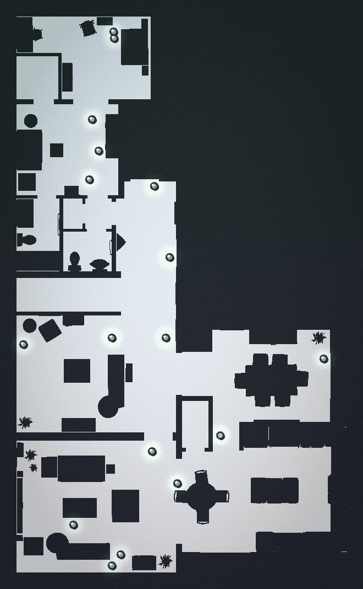
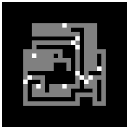
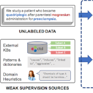
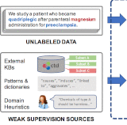
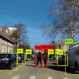
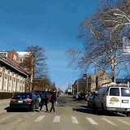

0
Downtime migrating Uber's Ray training controller across 2,000+ ML pipelines to regional federated compute.
MLE · ML Systems
MLE on Uber's ML Training team. I build GPU training infrastructure, GenAI systems, and support LLM fine-tuning — spanning infra, applied ML, and production deployment.
Founder of Marovi AI, a research comprehension and translation platform that makes knowledge accessible across languages. Former NSF Graduate Research Fellow at UIUC.
San Francisco · Fluent in English and Spanish · Born in La Paz, Bolivia

Signals from production systems, research, and Marovi AI.
0
Downtime migrating Uber's Ray training controller across 2,000+ ML pipelines to regional federated compute.
3.7%
Drop in unsafe Uber driver behavior from a GenAI + telemetry-based distracted driving detection system.
Top 10% x2
Y Combinator selections for Marovi AI, a research comprehension and translation platform across 9+ languages.
4 Labs
Research at Stanford, UC Berkeley, UIUC (NSF fellow), and published with Google Brain (ICRA 2021).
Systems areas I work in.
Job controllers, GPU scheduling, training platform reliability, and supporting LLM fine-tuning (LoRA, QLoRA, full) at scale.
Agentic systems, RAG, structured evaluation, and production GenAI with safety guardrails.
GPU cluster orchestration, Ray on Kubernetes, DDP/FSDP, and federated compute at scale.
Crowdsourced translation and AI-powered learning platforms that make research accessible across languages.
Selected work across LLM systems, GenAI, and research.
A few representative projects.
Research comprehension and translation platform with crowdsourced corrections, a provider-agnostic LLM API, and agentic translation pipelines across 9+ languages.


Agent-driven indoor social-navigation toolkit with deterministic simulation, verification gates, and an Aegis overseer pipeline for VLM-backed qualitative realism checks and tuning.

Self-supervised programmatic data labeling through simulation: learns avoidance-critical regions from generated collision data and distills them into spatial models for scalable multi-agent motion planning.


Used Snorkel's programmatic labeling framework to generate training data for cross-sentence relation extraction via LSTMs. Achieved 12% F1 improvement through novel multi-sentence labeling functions and multi-task learning.


Weak supervision and behavioral heuristics surface risky roadway events when labeled data is scarce.
Selected academic work.
Building ML training infrastructure and GenAI systems at Uber. Growing Marovi AI on the side. Experimenting with agentic research via NavIRL.
I play guitar, drums, Latin dance, and travel. Covers and clips on Instagram.